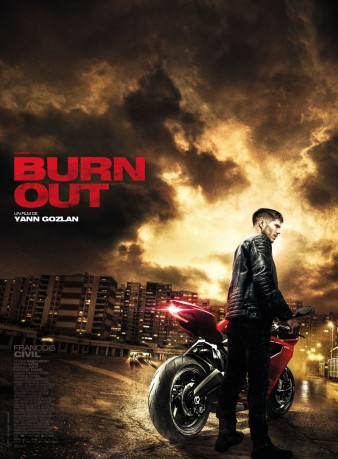
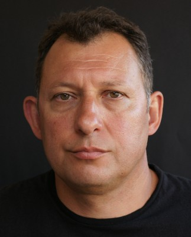

#10862 Burn Out
Alternativ: Burning Out, dans le ventre de l'hôpital (Originaltitel)
 
 IMDB-Wertung: 6.1 / 10
IMDB-Wertung: 6.1 / 10  Metascore: 0
Metascore: 0 
Head burned, addicted to thrills, Tony lives for one thing: become a professional motorcycle super-bike driver. Until the day he discovers that his son's mother is linked to the gypsy underworld. The only way out of this gear: put his talents at the service of mobsters. Circuit driver during the day, go-faster at night, Tony is plunged into an infernal spiral that leads him to the brink of rupture.
Jahr: 2017
Dauer: 103 Minuten
FSK:
Land: Frankreich Studio: GaumontTonspuren:
Untertitel: Deutsch, Englisch,
Auflösung: 1080p (1920x1080) Größe: 1484 MB
Genre: Action, Thriller
Regisseur: Yann Gozlan
Drehbuch: Yann Gozlan, Jérémie Guez, Guillaume Lemans, Simon Moutairou, Ludovic du Clary
Soundtrack: Gregoire Auger
Darsteller:
 François Civil als Tony
François Civil als Tony Olivier Rabourdin als Miguel
Olivier Rabourdin als Miguel- Luc Schwarz als Mario
-  Miglen Mirtchev als Voix homme parking Holland
 Paul Spera als
Paul Spera als - Manon Azem als Leyla
- Samuel Jouy als Jordan
- Narcisse Mame als Moussa
- Naël Rabia als Sofiane
- Sam Louwyck als Mike Paterson
- Mario Magalhaes als Serge
- Marc-Antoine Duquenne als Steve
- Ismaëla Koita als Kenji
- Kaourou Camara als Max
- Denis Leluc als Tamazo
- Walid Afkir als Farid
- Dimitri Boetto als Bellata
- Alain Bellot als Homme parking Hollande
- Raphaël Caravias-Boidin als Fils Miguel
- Margaux Guillosou als Fille Miguel
- Soufiane Guerrab als Homme aire autoroute
- Vincent Deniard als
- Philippe Lagnier als
- Sébastien Lozach als Le tatoué
Datei: X:\2017(A-F)\Burn Out (2017, FSK, 1920x1080).mkv seit 01.04.2019
Festplatte: HD 2017(A-Z)-2018(A-F)
 Es gibt insgesamt 152 Filme in der Gruppe '2017(A-F)'
Es gibt insgesamt 152 Filme in der Gruppe '2017(A-F)'